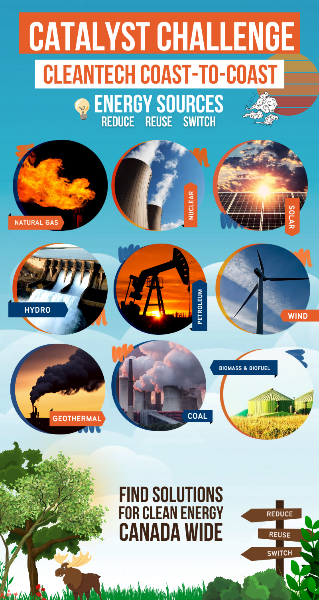
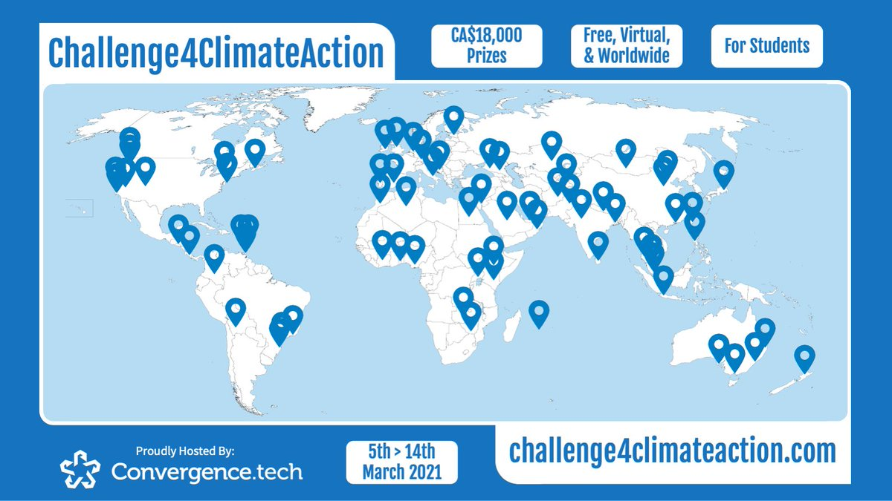

Research & Reports
Explore our latest research and reports, and stay up to date on the latest trends and insights in the field. Our experts are constantly exploring the latest trends and technologies, and we are dedicated to sharing our findings with the world.
Catalyst Challenge: CleanTech Coast-to-Coast
NSII competed in the Catalyst Challenge: CleanTech Coast-to-Coast in August of 2022. The team consisted of Neel Shah (Team Lead), Benjamin D. Fedoruk (Team Manager), Isaac Bahler, Russell Frost and Samantha Chong. Although the team did not win any prizes, a strong solution was posed. The team proposed Mjolnir, a service for nuclear energy companies to improve the likelihood of IAA approval by leveraging sentiment analytic insights.
REO Blueprint Competition
NSII submitted two teams to the 2022 REO Blueprint Competition, hosted by STEM Fellowship. Results are currently pending. On one team, Isaac Bahler and Russell Frost used a multimodal sentiment analysis system to eliminate climate change deniers and to distribute materials over social media. The other team, Samantha B. Chong and Jason Thai used statistical models to predict the optimal crop for environmental and sustainable growth.
MEDLIFE Movement Case Competition
NSII competed in the MEDLIFE Movement Case Competition in March of 2022. The team consisted of Benjamin D. Fedoruk, Alden O'Cain, Kai Fucile Ladouceur and Isaac Bahler. The team won the ICUBE Third Place Award, winning $100 as a result. The team proposed Edu-Act Peru, a solution to address the ongoing healthcare crisis in Peru. Edu-Act is a three-layered system to assist with the transport of patients to and from medical centers. Our solution encorporates HealthDecks, HealthBeacons and MediLink.
STEM Fellowship's York Indicium Research Competition
A team from NSII competed in the STEM Fellowship's York Indicium Research Competition. The team, consisting of Benjamin Fedoruk, Neel Shah and Amanda Showler, created a poster along with mentor Dr. Peiying (Jennifer) Tsai. Our research, Titled Darwinian MAVs: The Biomimicry of a Hybridization of Small Birds' Flight Patterns in the UAV Context, proposes an abstraction and hybridization approach to ornithopter-type micro-aerial vehicle (MAV) design. Darwinian evolution and Survival of the Fittest ensures that nature is well-designed. Thus, when designing MAVs, it is advisable to mimic natural patterns under specific use cases. Although the team did not win the competition, we plan on continuing our research and presenting at a conference.

AutoGuardian by SmartCone Beaumont Whitepaper
Benjamin Fedoruk and Kai Fucile Ladouceur of Team NSII worked with AutoGuardian by SmartCone to perform data analysis and draft a whitepaper. The work surrounding the implementation of a radar pedestrian beacon system in Beaumont, AB. The project's goal is to create safer and more walkable roads for all road users.
2021 IBM DataJam Against Exploitation
NSII participated in the 2021 IBM DataJam Against Exploitation in May 2021. Although the team did not place in the top 3, we were happy to participate. We worked to create a series of genera discussing various policies to fight human trafficking, while taking into account that various jurisdictions will have differing optima/requirements. This realization was achieved using various data analysis, which produced an optimal freedom score for minimizing human trafficking.
#Challenge4ClimateAction
NSII competed in the #Challenge4ClimateAction Datathon Stream hosted by Convergence.Tech in March/April of 2021. We placed second among over 70 teams from across the world. We explored the correlation between carbon pricing policies, and carbon emissions. We provided a list of 20 Calls to Action for various stakeholders.